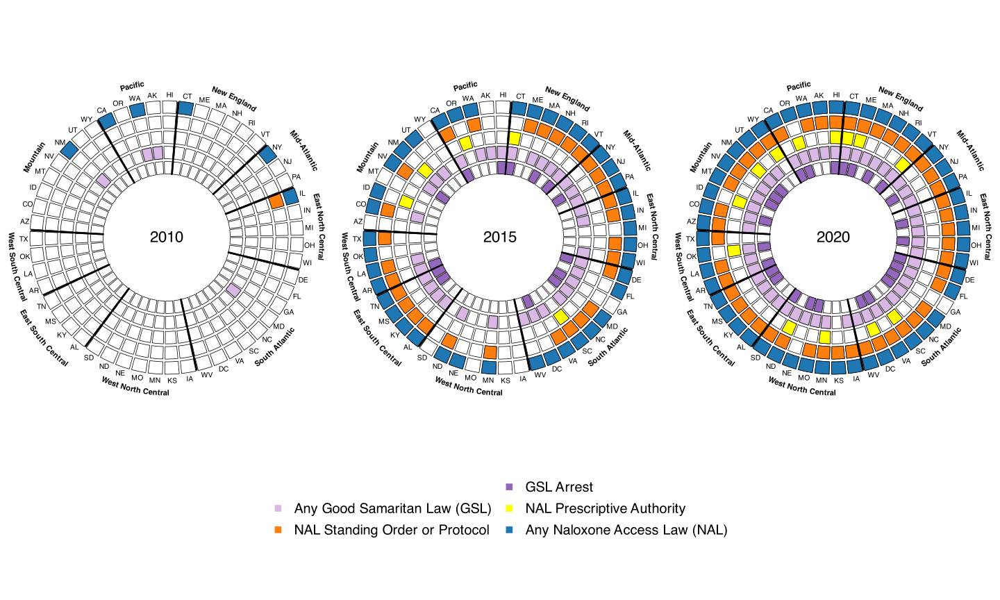
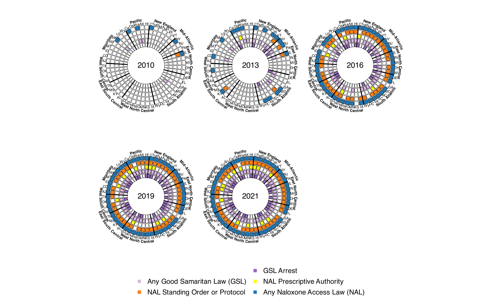
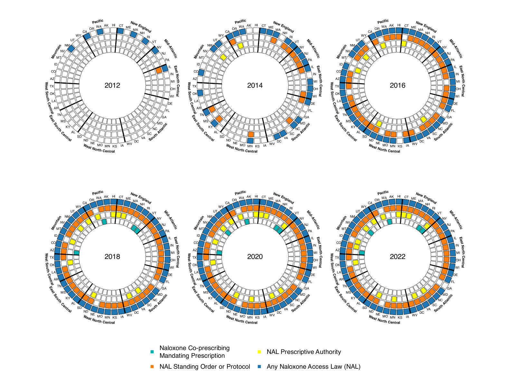

# loading packages
suppressPackageStartupMessages(library(circlize))
library(data.table)
library(plyr)
library(lubridate)
# loading functions
source("R/fill_in_cells.R")
source("R/make_policy_wheel.R")
source("R/plot_policy_wheel_internal.R")Optic Policy Wheels Tutorial
Joshua Eagan ![]()
Max Griswold
Beth Ann Griffin
Pedro Nascimento de Lima
Seema Choksy Pessar
Rosalie Liccardo Pacula
Bradley Stein
Introduction
This tutorial demonstrates the creation of OPTIC (Opioid Policy Tools and Information Center) style policy wheel data visualizations. These graphs are meant to illustrate the timeline over which state level policies are implemented concurrently. For some examples of these data visualizations, skip to the middle of this tutorial.
Setup
To create one of these graphs, you first need to load in a few R packages:
circlize(Gu, Z., 2014)data.table(Srinivasan, 2023)plyr(Grolemund, 2011)lubridate(Grolemund, 2011)
You also need to load in the appropriate functions from this project’s working directory- we did this below using source.
The R function we use to plot policy wheels is plot_policy_wheels.
Plotting Policy wheels
Next, you need to load in your data. In the code below, we load in a wide version of the data, meaning that there is one row for each state (50 states and DC) and a column for each policy, containing the date each policy was implemented for each state. Next, we rename columns in the wide data so variables are named with the text we want displayed in the graphs.
# reading in a data frame where rows are states, columns are policies, and values are enactment dates
# Dates can come in the forms: "1/15/2015", "2015-01-15", "2015", or "January 15, 2015"
df_wide <- read.csv('Data/processed/example_data_wide.csv')
names(df_wide) = gsub("\\.", " ", names(df_wide))
# renaming variables
names(df_wide)[names(df_wide) == "nal_date_any_nal"] = "Any Naloxone Access Law (NAL)"
names(df_wide)[names(df_wide) == "nal_date_nal_protocol_standing"] = "NAL Standing Order or Protocol"
names(df_wide)[names(df_wide) == "nal_date_nal_Rx_prescriptive_auth"] = "NAL Prescriptive Authority"
# all NAL laws and GSL
names(df_wide)[names(df_wide) == "gsl_date_anygsl"] = "Any Good Samaritan Law (GSL)"
names(df_wide)[names(df_wide) == "gsl_date_gsl_arrest"] = "GSL Arrest"
# NAL laws and medical/rec cannabis access
names(df_wide)[names(df_wide) == "mm_date_effMML"] = "Medical Marijuana Law"
names(df_wide)[names(df_wide) == "mm_date_active_medlegdisp"] = "Medical MJ Dispensaries Open"
names(df_wide)[names(df_wide) == "mm_date_effREC"] = "Recreational Marijuana Law"
names(df_wide)[names(df_wide) == "mm_date_active_dispREC"] = "Recreational MJ Store Open"
# co-prescribing
names(df_wide)[names(df_wide) == "copnal_date_all_prescribe"] = "Naloxone Co-prescribing\nMandating Prescription"
# looking at the data
head(df_wide) X state obbt_date_counseling obbt_date_doselimit obbt_date_clincontact
1 1 AK <NA> <NA> <NA>
2 2 AL <NA> <NA> <NA>
3 3 AR <NA> <NA> <NA>
4 4 AZ <NA> <NA> <NA>
5 5 CA <NA> <NA> <NA>
6 6 CO <NA> <NA> <NA>
Any Naloxone Access Law (NAL) NAL Standing Order or Protocol
1 2016-04-01 2016-04-01
2 2015-07-01 2015-07-01
3 2015-08-01 2015-08-01
4 2016-09-01 2016-09-01
5 2008-01-01 2014-01-01
6 2013-06-01 2015-04-01
NAL Prescriptive Authority Any Good Samaritan Law (GSL) GSL Arrest
1 <NA> 2008-09-08 <NA>
2 <NA> 2015-06-10 <NA>
3 <NA> 2015-07-22 2015-07-22
4 <NA> 2018-04-26 <NA>
5 <NA> 2013-01-01 2013-01-01
6 2021-09-01 2012-05-29 2016-08-10
copnal_date_eff_nalcop copnal_date_eff_all pdmp_date_AnyPDMP
1 <NA> <NA> 2008-09-07
2 2018-09-02 <NA> 2004-08-01
3 <NA> <NA> 2011-03-11
4 2018-04-26 2018-04-26 2007-09-19
5 2019-01-01 2019-01-01 1939-01-01
6 2017-11-30 <NA> 2005-06-03
pdmp_date_Any_PMP_Horowitz pdmp_date_Op_PDMP pdmp_date_mustaccess
1 2008-09-01 2012-01-01 <NA>
2 2005-11-01 2006-04-01 <NA>
3 2013-03-01 2013-05-01 <NA>
4 2007-09-01 2008-12-01 <NA>
5 1990-01-01 2009-09-01 <NA>
6 2005-06-01 2008-02-01 <NA>
pdmp_date_electronic Medical Marijuana Law Recreational Marijuana Law
1 2008-09-07 1999-03-02 2015-02-24
2 2004-08-01 <NA> <NA>
3 2011-07-27 2016-11-09 <NA>
4 2007-09-19 2010-12-14 <NA>
5 1998-01-01 1996-11-06 2016-11-09
6 2005-06-03 2000-12-28 2012-12-10
mm_date_meddisp_leg Medical MJ Dispensaries Open Recreational MJ Store Open
1 <NA> <NA> 2016-10-01
2 <NA> <NA> <NA>
3 2016-11-09 <NA> <NA>
4 2010-12-14 2012-12-06 <NA>
5 2004-01-01 2004-01-01 2018-01-01
6 2010-07-01 2010-06-07 2014-01-01
Naloxone Co-prescribing\nMandating Prescription
1 <NA>
2 <NA>
3 <NA>
4 2018-04-26
5 <NA>
6 <NA>Once the data are clean, you can run plot_policy_wheels to make your graph. This function takes the following arguments:
data a dataframe - this should be wide dataset; rows are states and columns contain the dates each policy was passed. Dates can be in the form of “1/15/2015”, “2015-01-15”, “2015”, or “January 15, 2015”- only the year will be kept.
policies a character vector containing the names of the policy variables you would like contained in your policy wheels.
state_var a string- the name of the variable identifying states by their two letter abbreviation (all caps).
policy_intervals a numeric vector stating the time points to create policy wheels for.
nrows how many rows of policy wheels should be included? defaults to ceiling(length(policy_intervals)/3).
ncols how many columns of policy wheels should be included? defaults to 3.
panel_width how wide should each panel (each panel contains a policy wheel) be?
panel_height how tall should each panel be?
byrow T/F- should wheels be ordered by rows (horizontally) or by columns (vertically)?
plot_colors character vector containing the names of the colors corresponding with each policy.
plot_width how wide should the plot be in total?
plot_height how tall should the plot be in total (including legend).
legend_args extra arguments to be passed on to legend. See ?legend for more details.
out_file the file path to save the new plot at.
# generating policy wheels
plot_policy_wheels(data = df_wide,
# ordering policies by name:
policies = c("Any Naloxone Access Law (NAL)", "NAL Standing Order or Protocol", "NAL Prescriptive Authority", "Any Good Samaritan Law (GSL)", "GSL Arrest"),
# name of the state variable
state_var = "state",
# restrict to relevant policy intervals, for locations that implemented the policy
policy_intervals = c(2010, 2015, 2020),
plot_colors = c("#1f77b4", "#ff7f0e", "#FFFF00", "#dab8e5", "#9467bd"),
legend_args = list(x = "center", xjust = 0.5, y.intersp = 1.3, x.intersp = 1.3, cex = 2.5, pt.cex = 2.7, bty = "n", ncol = 2),
panel_width = 4,
panel_height = 5,
# where should the graph be saved?
out_file = "www/policy_wheel_1.svg")[1] 2010[1] 2015[1] 2020# displaying the new graph
knitr::include_graphics("www/policy_wheel_1.svg")
Referencing the graph, you can see that the ordering of the policies argument corresponds to the ordering of plot_colors. The policy enactment dates in df were converted to years and split across 3 separate wheels according to policy_intervals. One important thing to note is that policies that were passed before the first year of policy_intervals are still included in the graph. There is an interesting amount of variation in the “in-between” years (2011-2014 and 2016-2019)- so increasing the amount of years displayed might better illustrate these trends. You can see an example of this change below.
# generating policy wheels
plot_policy_wheels(data = df_wide,
# ordering policies by name:
policies = c("Any Naloxone Access Law (NAL)", "NAL Standing Order or Protocol", "NAL Prescriptive Authority", "Any Good Samaritan Law (GSL)", "GSL Arrest"),
# name of the state variable
state_var = "state",
# restrict to relevant policy intervals, for locations that implemented the policy
policy_intervals = c(2010, 2013, 2016, 2019, 2021),
plot_colors = c("#1f77b4", "#ff7f0e", "#FFFF00", "#dab8e5", "#9467bd"),
legend_args = list(x = "center", xjust = 0.5, y.intersp = 1.3, x.intersp = 1.3, cex = 2.5, pt.cex = 2.7, bty = "n", ncol = 2),
panel_width = 4,
panel_height = 5,
nrows = 2,
ncols = 3,
# where should the graph be saved?
out_file = "www/policy_wheel_1_revised.svg")[1] 2010[1] 2013[1] 2016[1] 2019[1] 2021# displaying the new graph
knitr::include_graphics("www/policy_wheel_1_revised.svg")
If you are making your own plots, you can also edit the following settings:
plot_widthandplot_height: these edit the dimensions of the plot output and will need to be adjusted according to your needs.legend_args: this is a list whose elements will be passed tographics::legend(). Within the function, two arguments are already configured for you,legendandcol, but it’s up to you to configure the remaining. The defaults are probably fine here, but if you want to change anything, refer to?graphics::legend.
See another example of a policy wheel below:
# generating policy wheels
plot_policy_wheels(data = df_wide,
# ordering policies by name:
policies = c("Any Naloxone Access Law (NAL)", "NAL Standing Order or Protocol", "NAL Prescriptive Authority",
"Medical Marijuana Law", "Medical MJ Dispensaries Open", "Recreational Marijuana Law", "Recreational MJ Store Open"),
# name of the state variable
state_var = "state",
# restrict to relevant policy intervals, for locations that implemented the policy
policy_intervals = c(2012, 2015, 2018, 2021),
plot_colors = c("#1f77b4", "#ff7f0e", "#FFFF00",
"#f7a8a8", "#d62728", "#90EE90","#006400"),
legend_args = list(x = "center", xjust = 0.5, y.intersp = 1.3, x.intersp = 1.3, cex = 2.5, pt.cex = 2.7, bty = "n", ncol = 2),
plot_width = 22,
plot_height = 16,
nrows = 2,
ncols = 2,
panel_width = 5,
panel_height = 6,
# where should the graph be saved?
out_file = "www/policy_wheel_2.svg")[1] 2012[1] 2015[1] 2018[1] 2021# displaying the new graph
knitr::include_graphics("www/policy_wheel_2.svg")
In this example, we include data for 7 policies at 4 time points in 3 year intervals. Also, note that the nrows and ncols arguments were used to control the layout of the wheels. The result is a bit crowded, and we would recommend including fewer than 7, or even 6 policies in one of these plots. We can infer that most states enacted some form of a Naloxone Access Law (NAL) between 2012 and 2015 (blue). Many of these NALs allowed the distribution of Naloxone through a standing or protocol order (orange), but most states did not pass laws allowing pharmacists prescriptive authority (yellow) until later in the time series. We can also see that the states in the West and North-East tended to pass these policies earlier than states in the Midwest and South. Also notice that medicinal (red) and recreational (green) marijuana laws were enacted around the same time (if not slightly after) NAL in many states.
Lastly, let’s create a plot that shows the association between the commencement of NALs and Naloxone Co-prescribing Laws that mandate prescribing and affect all patients.
# generating policy wheels
plot_policy_wheels(data = df_wide,
# ordering policies by name:
policies = c("Any Naloxone Access Law (NAL)", "NAL Standing Order or Protocol", "NAL Prescriptive Authority",
"Naloxone Co-prescribing\nMandating Prescription"),
# name of the state variable
state_var = "state",
# restrict to relevant policy intervals, for locations that implemented the policy
policy_intervals = c(2012, 2014, 2016, 2018, 2020, 2022),
plot_colors = c("#1f77b4", "#ff7f0e", "#FFFF00",
"#00b3b3"),
legend_args = list(x = "center", xjust = 0.5, y.intersp = 1.3, x.intersp = 1.3, cex = 2.5, pt.cex = 2.7, bty = "n", ncol = 2),
plot_width = 22,
plot_height = 16,
panel_width = 5,
panel_height = 6,
# where should the graph be saved?
out_file = "www/policy_wheel_3.svg")[1] 2012[1] 2014[1] 2016[1] 2018[1] 2020[1] 2022# displaying the new graph
knitr::include_graphics("www/policy_wheel_3.svg")
Sources:
- Gu, Z. circlize implements and enhances circular visualization in R. Bioinformatics 2014.
- Garrett Grolemund, Hadley Wickham (2011). Dates and Times Made Easy with lubridate. Journal of Statistical Software, 40(3), 1-25. URL https://www.jstatsoft.org/v40/i03/
- Dowle M, Srinivasan A (2023). data.table: Extension of
data.frame. R package version 1.14.8, https://CRAN.R-project.org/package=data.table - Hadley Wickham (2011). The Split-Apply-Combine Strategy for Data Analysis. Journal of Statistical Software, 40(1), 1-29. URL https://www.jstatsoft.org/v40/i01/.